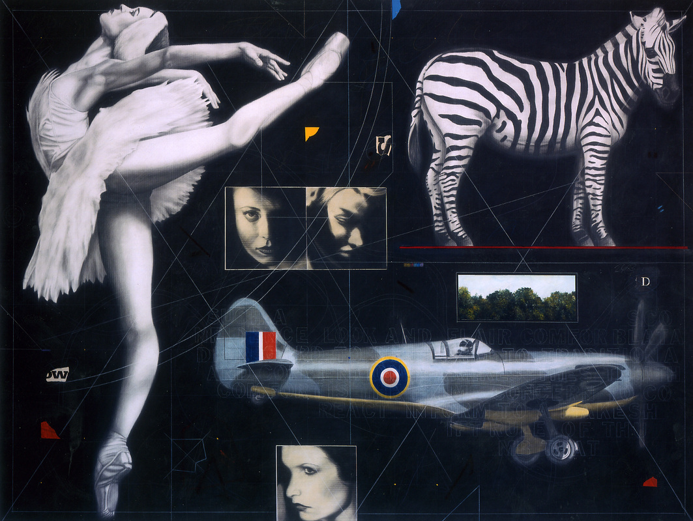

1937
2022
Joseph Piccillo was born in 1937 in Buffalo, New York.
He received both his Bachelors and Masters degrees at State University College at Buffalo.
Piccillo’s graphite and charcoal drawings threaten to rupture the boundaries of their two dimensional world.
His loaded images of running or rearing horses carry great emotional power, a key point in Piccillo’s works.
Many of these horses bear the bridles and implements of their domination, as they perform in what could be the spotlight of a circus tent.
EDUCATION
1961 State University College at Buffalo, B.S. Art Education
1964 State University College at Buffalo, M.S. Art Education
SELECTED SOLO EXHIBITIONS
2008
George Billis Gallery, New York, NY
2007
Chase Gallery, Boston, MA
2006
Perimeter Gallery, Chicago, IL
Robert Kidd Gallery, Birmingham, MI
2005
R. Duane Reed Gallery, NY
Robert Kidd Gallery, Birmingham, MI
2004
Philips Fine Art, Sand Jose, CA
Robert Kidd Gallery, Birmingham, MI
2003
Chase Gallery, Boston, MA
R. Duane Reed Gallery, St. Louis, MO
Gallery Camino Real, Boca Raton, FL
2002
Perimeter Gallery, New York, NY
Perimeter Gallery, Chicago, IL
Robert Kidd Gallery, Birmingham, MI
2000
Chase Gallery, Boston, MA
Rathbone Gallery, New York, NY
1999
Perimeter Gallery, Chicago, IL
Robert Kidd Gallery, Birmingham, MI
1997
Perimeter Gallery, Chicago, IL
Galerie Camino Real, Boca Raton, FL
Elliot Smith Gallery, St. Louis, MO
1995
Monique Knowlton Gallery, New York, NY
1994
Fay Gold Gallery, Atlanta, GA
Betsy Rosenfield Gallery, Chicago, IL
1993
Elliot Smith Gallery, St. Louis, MO
1992
Brendan Walter Gallery, Santa Monica, CA
1991
Betsy Rosenfield Gallery, Chicago, IL
1990
Elliot Smith Gallery, St. Louis, MO
Brendan Walter Gallery, Santa Monica, CA
1989
Betsy Rosenfield Gallery, Chicago, IL
1988
Elliot Smith Gallery, St. Louis, MO
Barbara Fendrick Gallery, Washington, D.C.
Barbara Fendrick Gallery, New York, NY
1987
Davis-McClain Gallery, Houston, TX
Betsy Rosenfield Gallery, Chicago, IL
Burchfield Center, Buffalo, NY
1986
Elliot Smith Gallery, St. Louis, MO
1984
Betsy Rosenfield Gallery, Chicago, IL
Monique Knowlton Gallery, New York, NY
1983
Monique Knowlton Gallery, New York, NY
Galleria Forni, Bolgna, Italy
1981
Betsy Rosenfield Gallery, Chicago, IL
Monique Knowlton Gallery, New York, NY
Albright-Knox Art Gallery, Buffalo, NY
1980
Monique Knowlton Gallery, New York , NY
1979
Galeria Loyse Oppenheim, Geneva, Switzerland
1978
Galeria Loyse Oppenheim, Geneva, Switzerland
State University College at Buffalo, NY
St. Lawrence University, Canton, NY
Kranser Gallery, New York, NY
SELECTED GROUP EXHIBITIONS
2007
Age of Innocence, Chase Gallery, Boston, MA
2004
“New York Collects Buffalo State,” Burchfield-Penney Art Center, Buffalo, NY
2001
“Horse Tales, Katonah Museum of Art,” Katonah, NY
“Summertime,” Chase Gallery, Boston, MA
2000
Figures, Fantasy & Illusion: Selections from the Arthur S. Goldberg Collection, Danforth Museum, Framingham, MA
1999
“Contemporary American Realist Drawings,” Chicago Art Institute Chase Gallery, Boston, MA (two person show)
1998
“Landfall Press – 25 Years of Printmaking,” Traveling Exhibition
1998
“The Horse Show,” Chase Gallery, Boston, MA
1995
“The Beauty in the Beast,” Columbus Museum of Art, Columbus OH
1991
“A Horse of a Different Color,” Scottsdale Center for the Arts, Scottsdale, AZ
1989
“The Figure Revisited,” Hastings-on-Hudson, NY
1987
“Drawing: The New Tradition,” Huntsville Museum of Art, Huntsville, AL
“New Acquisitions,” Metropolitan Museum of Art, New York, NY
1986
“N.Y.C. New Work,” Delaware Art Museum, Delaware, MD
“American Realism: 20th Century Drawings and Watercolors,” The Glenn C. Janss Collection,San Francisco Museum of Modern Art, San Francisco, CA
1985
“Large Figurative Drawings,” The Virginia Museum, Richmond, VA
“The Recognizable Image: 16 Contemporary Realists,” The Bruce Museum, Greenwich, CT
“Figure it Out: Exploring the Figure in Contemporary Art,” Laguna Gloris Art Museum, Austin, TX
1984
“Indianapolis Biennial,” Indianapolis Museum of Art, Indianapolis, IN
“Hard Line: Drawing as a Primary Medium,” Islip Art Museum, East Islip, NY
“Andrew Wyeth: A Trojan Horse Modernist,” Greenville County Museum of Art, Greenville, NC
“Beasties,” Sioux City Art Center, Sioux City, IA
“Animals!,” Stamford Museum, Stamford, CT
“Images on Paper,” Art & Architecture Gallery, University of Tennessee, Knoxville, TN
1983
New Work, Monique Knowlton Gallery, New York, NY
“Drawings,” Monique Knowlton Gallery, New York, NY
“The figurative Mode: Recent Drawings from the New York City Galleries,” Dowd Fine Arts Center Gallery, S.U.N.Y College at Cortland, NY
“Art on Paper 1983, 19th Weatherspoon Annual Exhibition,” Univ. of North Carolina, Greensboro, NC
“Cross Currents of Contemporary Art: On the Leading Edge of the Eighties,” General Electric Corporate Art Collection, Fairfield, CT
1982
“Points of View,” Museum of Art, University of Oklahoma, Norman, OK
“Collectors Choice,” Mississippi Museum of Art, Jackson, MS
“Collectors Choice,” Loch Haven Art Center, Orlando, FL
1981
“New Dimensions in Drawing,” Aldrich Museum of Contemporary Art, Virginia Museum, Richmond, VA
“Animal Imagery,” Institute of Contemporary Art, Virginia Museum, Richmond, VA
“Animals in American Art 1880-1980,” Nassau County Museum of Fine Art, Roslyn, NY
1979
Art 10 ’79 Basle, Switzerland
Monique Knowlton Gallery, New York, NY
1978
Art 8 ’79 Basle, Switzerland
Fischer Fine Arts Ltd., London
1977
Galerie Isy Brachot, Brussels
Fischer Fine Arts Ltd., London
SELECTED PUBLIC COLLECTIONS
Albrecht Museum, St. Joseph, MO
Metropolitan Museum of Art, New York, NY
Albert Knox Gallery
Museum of Contemporary Art, Chicago, IL
Allentown Art Museum, Allentown, PA
Museum of Modern Art, New York, NY
Art Institute of Chicago, Chicago, IL
Rochester Memorial Art Center, Rochester, NY
Brooklyn Museum of Art, New York, NY
Southern Illinois University, Carbondale, IL
Butler Museum of Art, Youngstown, OH
Springfield Art Museum, Springfield, MA
Hunter Museum of Art, Chattanooga, TN
State University of New York, Buffalo, NY
Jacksonville Art Museum, Jacksonville, FL
St. Lawrence University, Canton, NY
Little Rock Art Museum, Little Rock, AK
University of Arizona
SELECTED CORPORATE COLLECTIONS
American Express
Interfirst Bank
Bank of America
K Mart Corporation
Charles R. Penny Foundation
Microsoft
Coca Cola
Owens Illinois
Continental Bank
Pantheon Company
Dow-Jones
Phillip Morris Companies, Inc.
The Estee Lauder Companies, Inc.
Principal Financial Group
Fidelity Trust
Prudential-Bache
First American National Bank
SOHIO
First National Bank
Southeast Banking Corporation
General Electric
Southwestern Bell
General Mills
Technimetrics
Guess? Jeans
Time, Inc.
IBM
Us West
Intermedics
The artist enlarges his subjects until they fill the entire space, gaining power as they gain size. Piccillo’s skillful mastery of his technique allows for an unparalleled volume, not traditionally found in two dimensional media. Expert application of charcoal enhances every nuance, with the shadows and light causing intricate veins to appear coursing with blood.